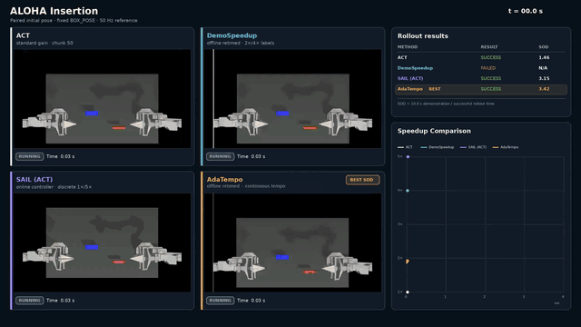

AdaTempo: Learning Shared Relative Tempo from Demonstrations for Faster Robot Manipulation
Preprint, 2026. Submitted to ICRA 2027.
Learning a shared relative tempo from demonstrations to train faster visuomotor policies, with up to 3.57× execution speedup across an evaluation of 11 simulated and real-world manipulation tasks.
My role: Led robomimic and ALOHA simulation experiments, ACT and Diffusion Policy comparisons, and systematic ablation studies.
More about my contributions
- Contributed to method design, demonstration processing, policy training, and hyperparameter tuning.
- Contributed to real-robot system setup, task design, data collection, and evaluation.
Advisor: Prof. Huazhe Xu